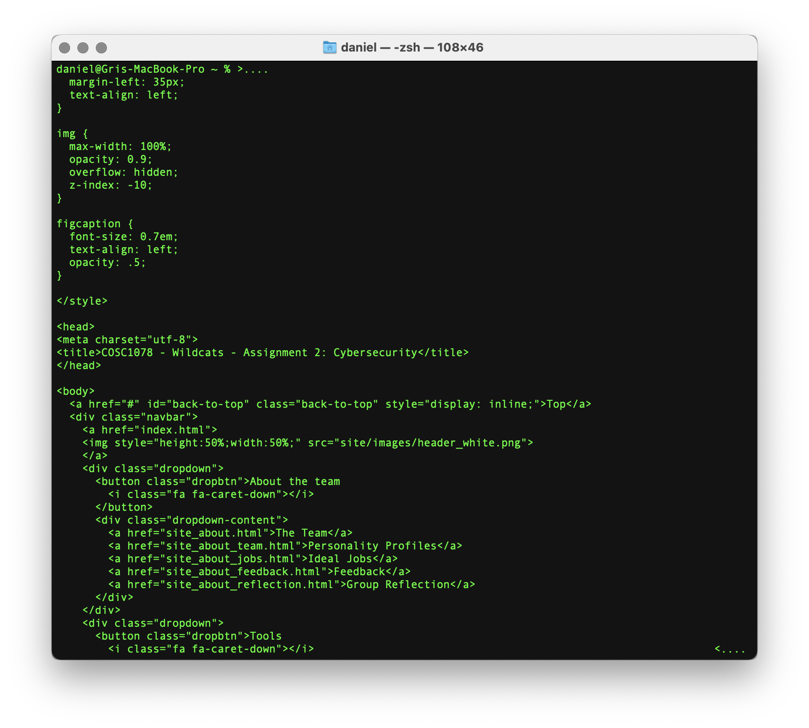
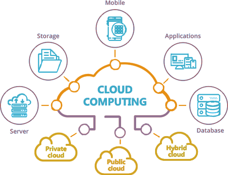

What is Cybersecurity?
What is Cybersecurity? Cybersecurity, also known as IT (Information Technology) Security is the act of securing networks and IT systems from threats, whether they are outside of systems or from within our workplaces, homes or somewhere in-between....
Read more here

Cloud, Services & Servers
Clouds are servers that provide different services such as the running of software and applications, accessing and storing data virtually via the internet. This means that we do not have to rely on the physical hard disk to do these jobs....
Read more here

Natural Language Processing and Chatterbots
Natural Language Processing (NLP) is a part of the branch of computer science involving artificial intelligence that is concerned with giving computers the ability to understand speech and text, similarly to humans. The combination of the rule-based modeling....
Read more here
Machine Learning
Machine learning, as the name implies, is the ability for a machine to learn and notice patterns without any explicit programming. Elaborating on how this is done, machines are initially programmed with algorithms that allow them to analyse a particular set of....
Read more here